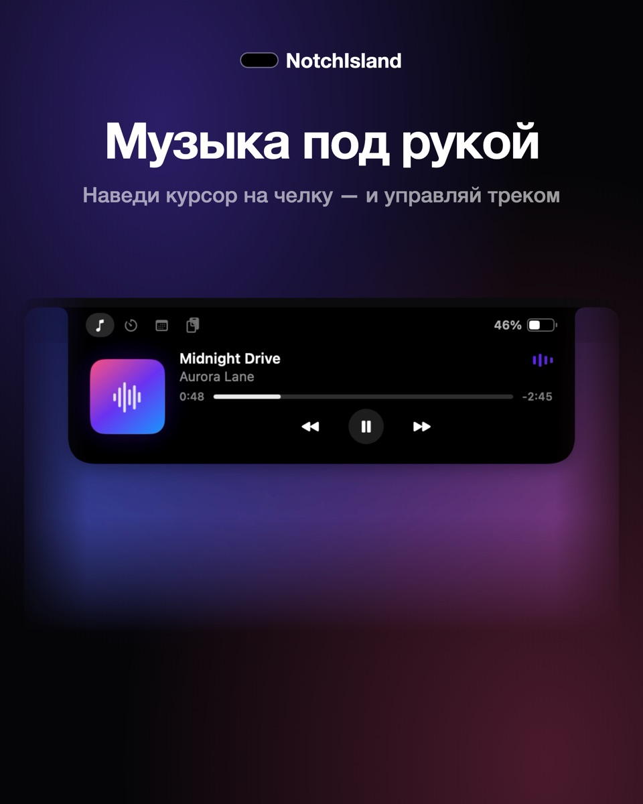
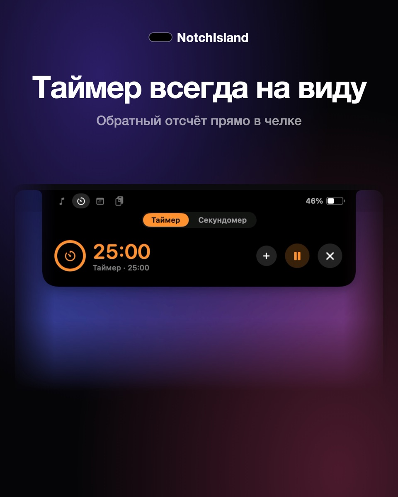
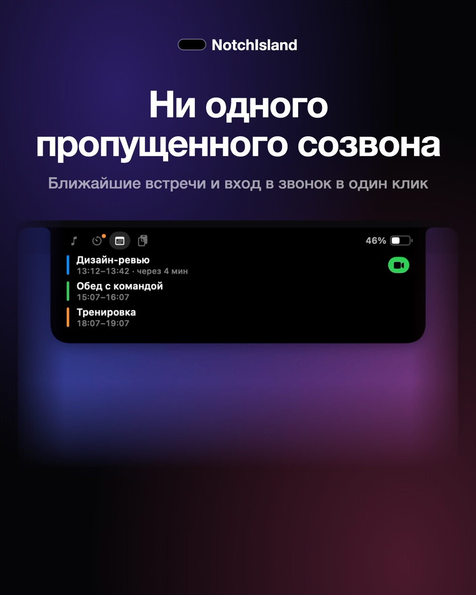
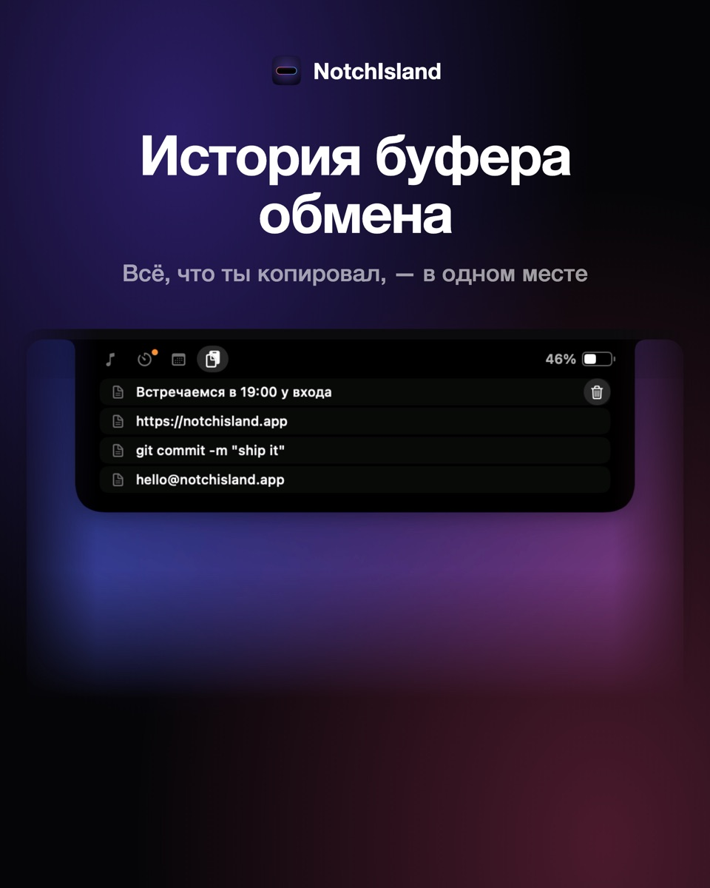
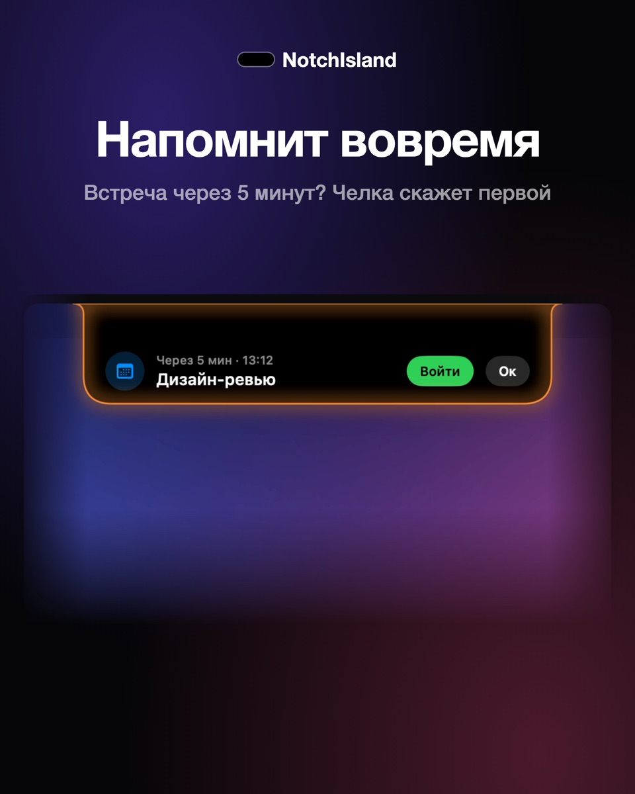
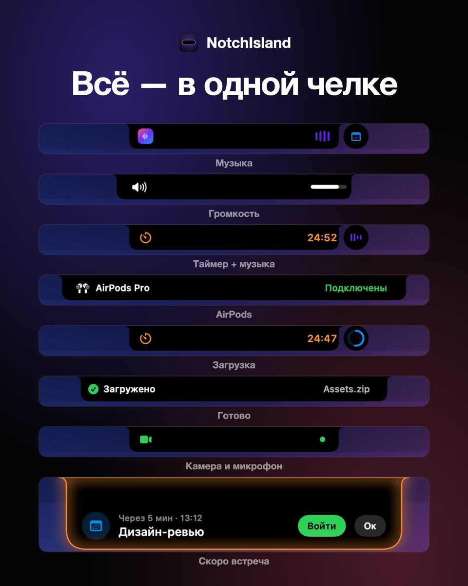

Dynamic Island —
теперь на Mac
NotchIsland превращает челку MacBook в живой остров: музыка, таймер, календарь, буфер обмена, загрузки и уведомления — с плавными анимациями в стиле Apple.
Всё самое нужное — в одной челке
Наведи курсор на челку, и она раскроется. Убери — свернётся обратно. Никаких окон и лишних кликов.






Любой плеер: Музыка, Spotify, SoundCloud и YouTube в браузере, Telegram. Обложка, эквалайзер, перемотка.
Таймер и секундомер с обратным отсчётом в челке.
Ближайшие встречи и вход в созвон в один клик.
История того, что ты копировал. Пароли не сохраняются.
Прокрути над челкой, с ⌥ — яркость.
Кольцо прогресса и «Готово», когда файл скачался.
Красивое уведомление о подключении наушников.
Сразу видно, когда они включены.
Не ест батарею. Вообще.
Всё работает на системных событиях, а не на постоянных опросах. Пока ты не трогаешь челку, приложение спит.
нагрузка на процессор в покое
памяти — меньше одной вкладки браузера
анимации на ProMotion, когда ты их видишь
Три шага — и челка ожила
Нажми «Скачать для macOS» и открой файл NotchIsland.dmg.
Перенеси иконку NotchIsland в папку Applications.
Открой приложение и нажми «Готово». Затем «Системные настройки → Конфиденциальность и безопасность» → внизу «Всё равно открыть». Это нужно только один раз.
Частые вопросы
Как обновить NotchIsland?
С версии 1.1 обновления приходят сами: иконка в строке меню → «Проверить обновления…» → «Установить». Если NotchIsland пишет, что его нельзя обновить, значит он запущен не из «Программ» (прямо из образа диска или из «Загрузок»). Начиная с 1.3 он сам предложит переехать в «Программы». Для версии 1.0 или вручную: иконка в строке меню → «Выйти», затем скачай NotchIsland заново и перетащи в «Программы» с заменой.
Работает ли на Mac без челки?
Да. На экранах без челки остров появится по центру верхнего края, но лучше всего он смотрится на MacBook Air и Pro с челкой.
macOS пишет, что приложение нельзя открыть
Это стандартная защита macOS для приложений не из App Store. Нажми «Готово», открой «Системные настройки → Конфиденциальность и безопасность», пролистай вниз и нажми «Всё равно открыть». Или одной командой в Терминале: xattr -dr com.apple.quarantine /Applications/NotchIsland.app
Зачем доступ к Музыке и Календарю?
Чтобы показывать текущий трек и ближайшие встречи. Всё обрабатывается только на твоём Mac — приложение ничего никуда не отправляет.
Можно отключить ненужные функции?
Да. Иконка в строке меню → «Настройки». Каждую функцию можно выключить отдельно.
Как удалить?
Иконка в строке меню → «Выйти», затем перетащи NotchIsland из «Программ» в Корзину.
Поддержать автора
NotchIsland бесплатный и без рекламы. Если он тебе нравится — можно угостить автора кофе. Это помогает выпускать обновления.